第 11 章 图像金字塔#
本章解决：怎么用一幅图造出"一组由粗到细"的多分辨率图像。向下采样每上一层宽高减半（
cv2.pyrDown，先高斯滤波再抛弃偶数行偶数列）；向上采样每下一层宽高加倍（cv2.pyrUp，补零后用高斯核乘 4 卷积）。这两种操作不可逆——所以还要学拉普拉斯金字塔：把每层下采样丢失的信息存成差值图，需要时一层层加回去，从低分辨率图精确复原原图。
运行环境约定
本章代码引用本目录根下的素材（picture1.jpg、picture1_gray.jpg、picture3_mouth.jpg），路径写作相对路径。运行时工作目录需为 数字图像处理-python 根目录，否则 imread 返回 None。原书用 lena.bmp（512×512 灰度图）、lenas.bmp（64×64 彩色小图）演示，本章统一换成素材目录里的图片：picture1_gray.jpg 顶替 lena.bmp（1080×1920 灰度），picture3_mouth.jpg 顶替 lenas.bmp（118×234 彩色），picture1.jpg 顶替彩色 lena（1080×1920×3）。代码逻辑一字未改，控制台打印的尺寸与数值会随图片不同而不同。
11.0 本章导图#
11.1 理论基础#
图像金字塔（image pyramid）是由一幅图像的多个不同分辨率子图构成的图像集合，由单个图像通过不断地降采样产生，最小的图像可能仅仅有一个像素点。金字塔是一系列以金字塔形状排列的、自底向上分辨率逐渐降低的图像：底部（第 0 层）是待处理的高分辨率原始图像，顶部是低分辨率的近似图像；每向上移动一级，图像的宽和高都降为原来的二分之一。
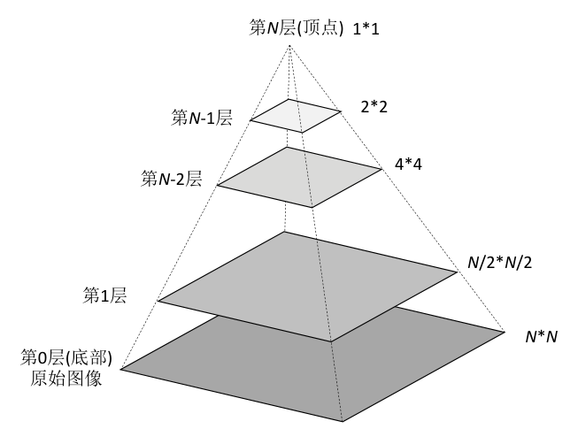
金字塔是通过对原图像不断向下采样（downsampling，也称降采样）产生的，即由高分辨率图像（大尺寸）产生低分辨率的近似图像（小尺寸）。做法有两条路：
- 最简单的方式：不断删除图像的偶数行和偶数列。一幅 \(N \times N\) 的图像删掉偶数行、偶数列后得到 \((N/2) \times (N/2)\) 的图像，大小变为原来的四分之一；不断重复即可得到金字塔。
- 先滤波再删：先对原始图像滤波得到近似图像，再删除近似图像的偶数行和偶数列。滤波器有多种选择：
- 邻域滤波器：用邻域平均技术求近似图像，产生平均金字塔（mean pyramid）；
- 高斯滤波器：用高斯滤波器（Gaussian filter）滤波，产生高斯金字塔（Gaussian pyramid）。这是 OpenCV 函数
cv2.pyrDown()采用的方式。
高斯金字塔通过不断地"高斯滤波 + 采样"产生，过程如图 11.2：原始图像 O（512×512）先高斯滤波得到滤波图像，再向下采样得到 D1（256×256）；对 D1 重复"滤波 + 采样"得到 D2（128×128）；再重复得到 D3（64×64）。
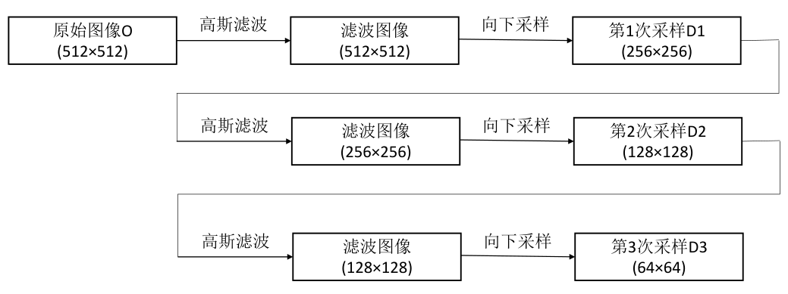
原始图像与各次向下采样的结果共同构成高斯金字塔。层号约定：原始图像是第 0 层，第 1 次向下采样的结果是第 1 层，第 2 次向下采样的结果是第 2 层，以此类推（见图 11.3）。本章统一把底层称为第 0 层，底层上面一层称为第 1 层。
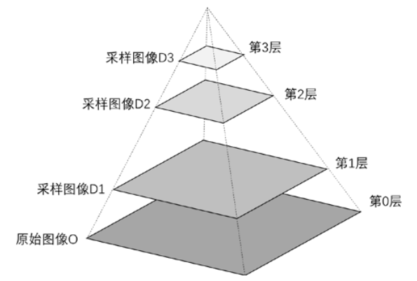
原书笔误：层数编号
原书 11.1 节写"第 2 次向下采样的结果图像称为第 3 层"，按它自己定下的编号规则应为第 2 层。
向上采样（upsampling，也称上采样）把图像的宽度和高度都变为原来的 2 倍，结果图像的大小是原始图像的 4 倍，因此要补充大量像素点。给新像素点赋值称为插值（interpolation），方式很多，例如最临近插值（nearest neighbor interpolation）就是用最邻近的像素点给还没有值的像素点赋值。
常见的一种向上采样以补零方式完成插值：在每列像素点的右侧插入值为零的列，在每行像素点的下方插入值为零的行。图 11.4 左侧是 2×2 的原始图像，右侧是补零后的 4×4 结果。
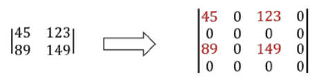
补零后，再用向下采样时所用的高斯核（kernel）对图像滤波，得到向上采样的结果。注意此时图像中四分之三的像素值都是零，直接卷积会把像素值范围压到原来的四分之一（例如 8 位图像从 \([0, 255]\) 变为 \([0, 255 \times 1/4]\)），所以要把高斯滤波器系数乘以 4，保证像素值范围仍在 \([0, 255]\) 内。
换个角度描述同一件事：把原图补零成两倍宽、两倍高 → 用向下采样的高斯滤波器卷积 → 把每个像素值乘以 4。三种操作合起来就是 cv2.pyrUp() 内部完成的过程。
拓展：系数为什么要乘 4
书中 5×5 高斯核的全部系数之和恰为 1（\((1+4+6+4+1)^2 / 256 = 1\)），卷积本来是"求加权平均"，亮度不增不减。补零后每个输出像素的邻域里只有约四分之一的像素非零，加权求和的结果自然掉到原来的四分之一；把核整体乘 4 正好补回。
向上采样和向下采样是相反的两种操作，但不可逆：向下采样会丢失像素值，所以先向上采样、再向下采样无法恢复原始状态；先向下采样、再向上采样同样无法恢复。这是本章后半部分拉普拉斯金字塔要解决的问题。
11.2 pyrDown 函数及使用#
OpenCV 用 cv2.pyrDown() 实现高斯金字塔的向下采样，语法形式：
dst：目标图像。src：原始图像。dstsize：目标图像的大小。borderType：边界类型，默认值BORDER_DEFAULT（原书与官方文档均写明仅支持该值）。
默认情况下，输出图像的大小为 Size((src.cols+1)/2, (src.rows+1)/2)。任何情况下，图像尺寸必须满足：
cv2.pyrDown() 分两步：先对原始图像做高斯滤波变换得到近似图像，所用的 5×5 高斯核为
然后抛弃近似图像的偶数行和偶数列，完成向下采样。
拓展：这个核可以拆成两趟一维卷积
上面 5×5 核是一维核 \([1, 4, 6, 4, 1]/16\) 与自身的外积（\(16 \times 16 = 256\)）。二维卷积拆成"先横向、再纵向"两趟一维卷积，结果相同、速度快得多。实测：用该核按默认边界（反射 101）卷积后删除偶数行、偶数列，结果与 cv2.pyrDown() 一致到最后的取整误差（逐像素差不超过 0.5）——pyrDown 内部做的正是这件事。
【例 11.1】用 cv2.pyrDown() 对一幅图像连续三次向下采样，观察结果。
# ===== 11.2 例 11.1：连续三次向下采样 =====
import cv2
o = cv2.imread("picture1_gray.jpg", cv2.IMREAD_GRAYSCALE) # 灰度读入（原书 lena.bmp，512×512）
r1 = cv2.pyrDown(o) # 第 1 次向下采样：宽高各减半
r2 = cv2.pyrDown(r1) # 第 2 次：对 r1 继续
r3 = cv2.pyrDown(r2) # 第 3 次：对 r2 继续
print("o.shape=", o.shape) # 原图尺寸
print("r1.shape=", r1.shape) # 第 1 层尺寸
print("r2.shape=", r2.shape) # 第 2 层尺寸
print("r3.shape=", r3.shape) # 第 3 层尺寸
cv2.imshow("original", o) # 显示原图
cv2.imshow("r1", r1) # 显示各层结果
cv2.imshow("r2", r2)
cv2.imshow("r3", r3)
cv2.waitKey()
cv2.destroyAllWindows()
控制台输出（picture1_gray.jpg）：
经过向下采样后，行数和列数都变为原来的二分之一，图像整体大小变为原来的四分之一。图 11.5 中 (a) 是原始图像 o，(b)、©、(d) 依次是 r1、r2、r3——分辨率逐级变低，细节逐级减少。
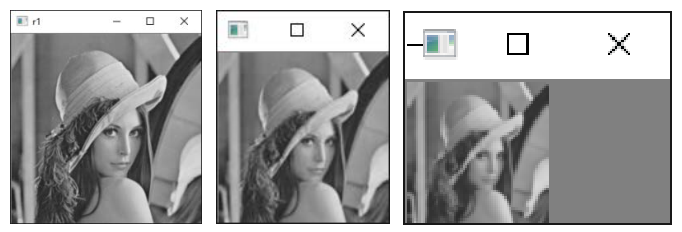
拓展：pyrDown 与 resize 不是一回事
cv2.resize 是几何缩放，按插值规则直接重采样；pyrDown 是"先高斯滤波压掉高频，再丢偶数行偶数列"，滤波这步是为了防止缩小后的混叠（aliasing，高频细节被塞进低分辨率网格产生的伪纹理）。实测同一幅图缩小一半：pyrDown 与 resize(INTER_AREA) 逐像素不同（最大差 88），与 resize(INTER_NEAREST) 差得更多（最大差 116）。缩小图像选 pyrDown 或 INTER_AREA 这类带平均的实现，别用 INTER_NEAREST。
11.3 pyrUp 函数及使用#
OpenCV 用 cv2.pyrUp() 实现图像金字塔的向上采样，语法形式：
dst：目标图像。src：原始图像。dstsize：目标图像的大小。borderType：边界类型，默认值BORDER_DEFAULT。
默认情况下，目标图像的大小为 Size(src.cols*2, src.rows*2)。任何情况下，图像尺寸需满足：
（原书第一式的 dst.width 误写作 "widh"，此处已按官方文档更正。）
向上采样的内部过程就是 11.1 节描述的三步：每个像素右侧、下方分别插入零值列、零值行，得到偶数行、偶数列全为零的新图像；用向下采样所用的高斯核滤波；滤波器系数乘 4 以保持像素值区间与原始图像一致。了解过程有助于理解函数，但 OpenCV 的目的就是让你忽略这些细节——初学阶段直接调用 cv2.pyrUp() 即可。
【例 11.2】用 cv2.pyrUp() 对一幅小图连续三次向上采样，观察结果。
# ===== 11.3 例 11.2：连续三次向上采样 =====
import cv2
o = cv2.imread("picture3_mouth.jpg") # 小尺寸彩色图（原书 lenas.bmp，64×64）
r1 = cv2.pyrUp(o) # 第 1 次向上采样：宽高各加倍
r2 = cv2.pyrUp(r1) # 第 2 次：对 r1 继续
r3 = cv2.pyrUp(r2) # 第 3 次：对 r2 继续
print("o.shape=", o.shape)
print("r1.shape=", r1.shape)
print("r2.shape=", r2.shape)
print("r3.shape=", r3.shape)
cv2.imshow("original", o) # 显示原图
cv2.imshow("r1", r1) # 显示各层结果
cv2.imshow("r2", r2)
cv2.imshow("r3", r3)
cv2.waitKey()
cv2.destroyAllWindows()
控制台输出（picture3_mouth.jpg）：
经过向上采样后，宽度和高度都变为原来的 2 倍，图像整体大小变为原来的 4 倍。图 11.6 中 (a) 是原始小图 o，(b)、©、(d) 依次是 r1、r2、r3——尺寸逐级放大，放大出来的部分是"补零 + 滤波"平滑出来的，看上去越来越模糊。
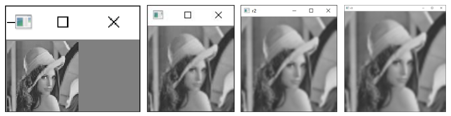
拓展：dstsize 允许满足约束的奇数值
约束式右边是"目标宽度 mod 2"，所以 pyrUp 的目标尺寸不一定是偶数。实测把 135×240 的图 pyrUp(dstsize=(481, 270))：\(|481 - 240 \times 2| = 1 \le 481 \bmod 2 = 1\)，OpenCV 4.13 通过，输出 270×481。pyrDown 同理支持自定义尺寸（如 1080×1920 的图 pyrDown(dstsize=(960, 540))）。乱给尺寸则直接 cv2.error（assertion failed，约束不满足）。
11.4 采样可逆性的研究#
向上采样后图像整体尺寸变为原来的 4 倍，向下采样后变为原来的四分之一。一幅 \(M \times N\) 的图像：向下采样后为 \((M/2) \times (N/2)\)；向上采样后为 \((2M) \times (2N)\)。
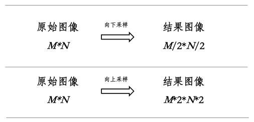
一幅图像先向下采样、再向上采样后，尺寸恢复为原始大小：
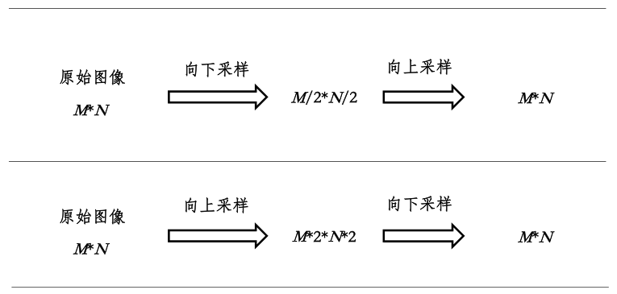
但向上采样和向下采样不是互逆的：两次操作后结果图像与原始图像大小一致、肉眼看起来也相似，像素值并不一致。下面两个例题分别验证"先下后上"与"先上后下"。
【例 11.3】先向下采样、再向上采样，观察与原始图像的差异。
# ===== 11.4 例 11.3：先向下采样，再向上采样 =====
import cv2
o = cv2.imread("picture1.jpg") # 原书 lena.bmp（彩色）
down = cv2.pyrDown(o) # 向下采样：宽高减半
up = cv2.pyrUp(down) # 向上采样：宽高复原
diff = up - o # 构造 diff 图像，查看 up 与 o 的区别
print("o.shape=", o.shape)
print("up.shape=", up.shape)
cv2.imshow("original", o)
cv2.imshow("up", up)
cv2.imshow("difference", diff)
cv2.waitKey()
cv2.destroyAllWindows()
控制台输出（picture1.jpg）：
up 与 o 大小一致。差值图像 diff 反映 up 与 o 的差别——实测非零像素约占 60.8%，把差值转成 int16 看真实取值范围为 \([-128, 157]\)。图 11.9 中 (a) 是原始图像 o，(b) 是 up，© 是 diff：diff 上密布的噪点就是采样过程中丢失又补不回来的信息。
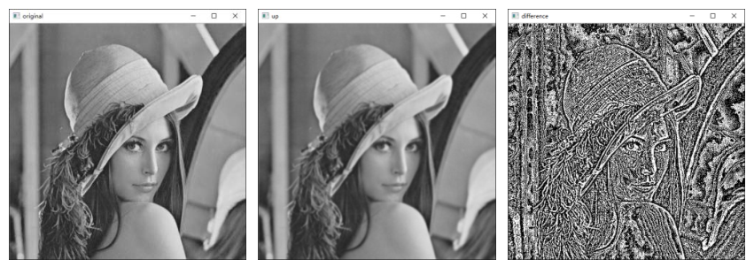
拓展：diff 图里看到的是回绕值
diff = up - o 是 numpy 在 uint8 上的模 256 回绕（wraparound）运算：真实差值为负时（up 比 o 暗），显示成 \(256 - |d|\) 的亮值。例如 \(3 - 5 = 254\) 而不是 \(-2\)。想看真实差异，用 cv2.absdiff(up, o) 取绝对值，或把两图转成 int16/float32 再相减。
【例 11.4】先向上采样、再向下采样，观察与原始图像的差异。
# ===== 11.4 例 11.4：先向上采样，再向下采样 =====
import cv2
o = cv2.imread("picture1.jpg")
up = cv2.pyrUp(o) # 向上采样：宽高加倍
down = cv2.pyrDown(up) # 向下采样：宽高复原
diff = down - o # 构造 diff 图像，查看 down 与 o 的区别
print("o.shape=", o.shape)
print("down.shape=", down.shape)
cv2.imshow("original", o)
cv2.imshow("down", down)
cv2.imshow("difference", diff)
cv2.waitKey()
cv2.destroyAllWindows()
控制台输出（picture1.jpg）：
down 与 o 大小一致。实测真实差值范围为 \([-77, 97]\)，非零像素约占 43.2%——"先上后下"的损失比"先下后上"略小，但依然不可逆。图 11.10 中 (a) 是原始图像 o，(b) 是 down，© 是 diff。
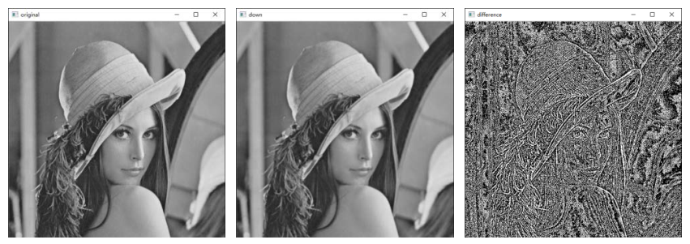
原书笔误：例 11.4 的子图标号
原书正文写"©图是对图像 up…(d)图是 down 和 o 的差值"，但图 11.10 只有 (a)(b)© 三个子图：应为 (b) 图是 down、© 图是 diff。
11.5 拉普拉斯金字塔#
高斯金字塔由一系列向下采样产生。有时希望反过来：对金字塔中的小图像向上采样，获取完整的大尺寸高分辨率图像——这时就需要拉普拉斯金字塔。
11.5.1 定义#
向上采样不是向下采样的逆运算：向下采样在高斯滤波后还要抛弃偶数行和偶数列，不可避免地丢失信息。要恢复高分辨率图像，就得把采样过程中丢失的信息获取并保存下来——这些丢失的信息构成拉普拉斯金字塔（Laplacian pyramid）。定义形式为：
- \(L_i\)：拉普拉斯金字塔中的第 \(i\) 层；
- \(G_i\)：高斯金字塔中的第 \(i\) 层。
即：拉普拉斯第 \(i\) 层 = "高斯第 \(i\) 层" − "高斯第 \(i+1\) 层的向上采样结果"。图 11.11 展示了两种金字塔的对应关系：高斯金字塔一路向下采样（G0→G1→G2→G3），每一层与下一层的放大结果相减，得到拉普拉斯层 L0、L1、L2。
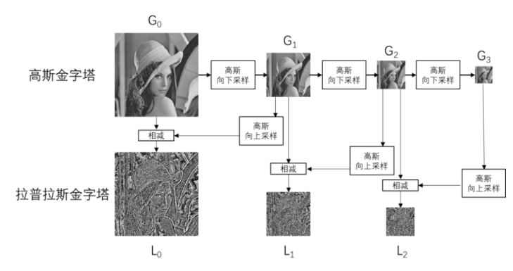
【例 11.5】用 cv2.pyrDown() 和 cv2.pyrUp() 构造拉普拉斯金字塔。
# ===== 11.5.1 例 11.5：构造拉普拉斯金字塔 =====
import cv2
O = cv2.imread("picture1.jpg") # 原书 lena.bmp
G0 = O # 高斯金字塔第 0 层（原始图像）
G1 = cv2.pyrDown(G0) # 第 1 层：G0 向下采样
G2 = cv2.pyrDown(G1) # 第 2 层：G1 向下采样
G3 = cv2.pyrDown(G2) # 第 3 层：G2 向下采样
L0 = G0 - cv2.pyrUp(G1) # 拉普拉斯第 0 层 = G0 − G1 的向上采样
L1 = G1 - cv2.pyrUp(G2) # 第 1 层 = G1 − G2 的向上采样
L2 = G2 - cv2.pyrUp(G3) # 第 2 层 = G2 − G3 的向上采样
print("L0.shape=", L0.shape)
print("L1.shape=", L1.shape)
print("L2.shape=", L2.shape)
cv2.imshow("L0", L0)
cv2.imshow("L1", L1)
cv2.imshow("L2", L2)
cv2.waitKey()
cv2.destroyAllWindows()
控制台输出（picture1.jpg）：
每层拉普拉斯图与对应的高斯层同尺寸：\(L_i\) 的尺寸等于 \(G_i\)。图 11.12 中 (a)、(b)、© 分别是 L0、L1、L2——三张"边缘纹理噪声"图，正是每一层向下采样时被高斯滤波抹掉、又被丢行丢列扔掉的那部分信息。
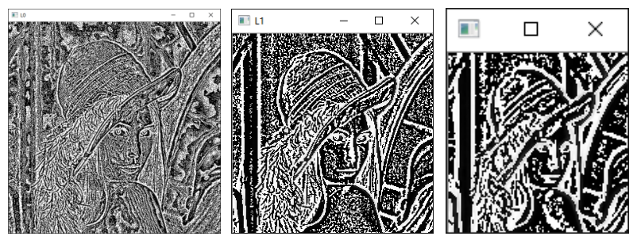
拓展：L 层看着像雪花是正常的
拉普拉斯层是残差（residual）图：真实差值有正有负（实测 L0 的真实取值范围 \([-157, 128]\)），存进 uint8 后负值回绕成大正值，正负细节混在一起，看起来就是边缘噪声。这类图不是用来看的，是用来"加回去"复原的。
11.5.2 应用#
拉普拉斯金字塔的作用是恢复高分辨率图像。图 11.13 演示恢复过程（右图是对左图的简化），各标记含义：
- \(G_0\)、\(G_1\)、\(G_2\)、\(G_3\)：高斯金字塔第 0~3 层；
- \(L_0\)、\(L_1\)、\(L_2\)：拉普拉斯金字塔第 0~2 层；
- 向下箭头：向下采样（
cv2.pyrDown()）； - 向右上方箭头：向上采样（
cv2.pyrUp()）； - 加号、减号：加法、减法操作。
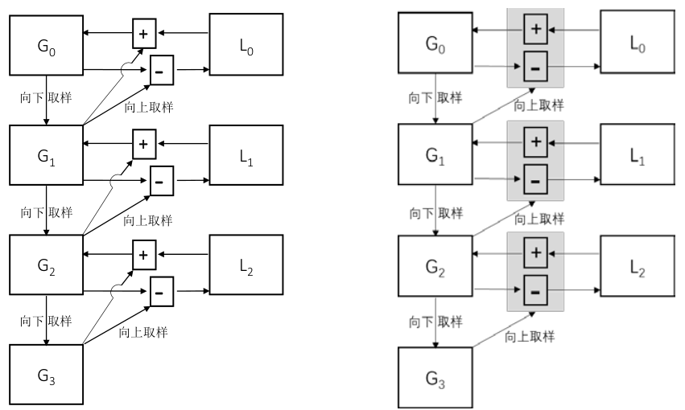
图 11.13 描述了三组关系：
- 向下采样（构成高斯金字塔）：
- 构成拉普拉斯金字塔：
- 向上采样恢复高分辨率图像：
恢复式由定义式直接移项得到：已知 \(L_0 = G_0 - \mathrm{pyrUp}(G_1)\)，把右侧的 \(\mathrm{pyrUp}(G_1)\) 移到左侧，就是 \(G_0 = L_0 + \mathrm{pyrUp}(G_1)\)。构造拉普拉斯金字塔的目的正是为了恢复高分辨率图像。
【例 11.6】用拉普拉斯金字塔及高斯金字塔恢复原始图像。
# ===== 11.5.2 例 11.6：复原原始图像 =====
import cv2
import numpy as np
O = cv2.imread("picture1.jpg")
G0 = O # 对原始图像重命名，方便后续观察和说明
G1 = cv2.pyrDown(G0) # 高斯金字塔第 1 层
L0 = O - cv2.pyrUp(G1) # 拉普拉斯金字塔第 0 层
RO = L0 + cv2.pyrUp(G1) # 通过拉普拉斯图像复原的原始图像
print("O.shape=", O.shape)
print("RO.shape=", RO.shape)
result = RO - O # 将 O 和 RO 做减法运算
result = abs(result) # 取绝对值，避免求和时正负抵消（如 3+(-3)=0）
print("原始图像O 与恢复图像RO 之差的绝对值和：", np.sum(result))
控制台输出（picture1.jpg）：
差值的绝对值和为 0，说明用拉普拉斯金字塔恢复的图像与原始图像完全一致。程序里"先取绝对值再求和"是个防误判技巧：如果直接求和，一个 \(+3\) 和一个 \(-3\) 也会加出 0，看似没有差异实则差异很大；取绝对值后求和，和为零就一定意味着每个元素都是零。
拓展：零误差恢复靠的是什么
数学上：\(RO = L_0 + \mathrm{pyrUp}(G_1) = (G_0 - \mathrm{pyrUp}(G_1)) + \mathrm{pyrUp}(G_1) = G_0\)，恒等变形而已。实现上靠的是 numpy 的 uint8 加减是模 256 回绕算术：\((a - b) + b \equiv a \pmod{256}\) 恒成立，所以"减下去再加回来"分毫不差。换成饱和运算就破了——实测用 cv2.subtract(G0, pyrUp(G1)) 构造 L0（负值截断为 0），再加回去，误差绝对值和高达约 1239 万、最大差 157。转 float32 计算同样精确（浮点无截断），但占四倍内存。
【例 11.7】用拉普拉斯金字塔及高斯金字塔恢复高斯金字塔内的多层图像。
# ===== 11.5.2 例 11.7：逐层复原高斯金字塔 =====
import cv2
import numpy as np
O = cv2.imread("picture1.jpg")
# ---------- 生成高斯金字塔 ----------
G0 = O
G1 = cv2.pyrDown(G0) # 第 1 层
G2 = cv2.pyrDown(G1) # 第 2 层
G3 = cv2.pyrDown(G2) # 第 3 层
# ---------- 生成拉普拉斯金字塔 ----------
L0 = G0 - cv2.pyrUp(G1) # 拉普拉斯金字塔第 0 层
L1 = G1 - cv2.pyrUp(G2) # 第 1 层
L2 = G2 - cv2.pyrUp(G3) # 第 2 层
# ---------- 复原 G0 ----------
RG0 = L0 + cv2.pyrUp(G1) # 通过拉普拉斯图像复原的原始图像 G0
print("G0.shape=", G0.shape)
print("RG0.shape=", RG0.shape)
result = RG0 - G0 # 将 RG0 和 G0 相减
result = abs(result) # 取绝对值，避免正负抵消
print("原始图像G0 与恢复图像RG0 差值的绝对值和：", np.sum(result))
# ---------- 复原 G1 ----------
RG1 = L1 + cv2.pyrUp(G2) # 通过拉普拉斯图像复原 G1
print("G1.shape=", G1.shape)
print("RG1.shape=", RG1.shape)
result = RG1 - G1 # 将 RG1 和 G1 相减
print("原始图像G1 与恢复图像RG1 之差的绝对值和：", np.sum(abs(result)))
# ---------- 复原 G2 ----------
RG2 = L2 + cv2.pyrUp(G3) # 通过拉普拉斯图像复原 G2
print("G2.shape=", G2.shape)
print("RG2.shape=", RG2.shape)
result = RG2 - G2 # 将 RG2 和 G2 相减
print("原始图像G2 与恢复图像RG2 之差的绝对值和：", np.sum(abs(result)))
控制台输出（picture1.jpg）：
G0.shape= (1080, 1920, 3)
RG0.shape= (1080, 1920, 3)
原始图像G0 与恢复图像RG0 差值的绝对值和： 0
G1.shape= (540, 960, 3)
RG1.shape= (540, 960, 3)
原始图像G1 与恢复图像RG1 之差的绝对值和： 0
G2.shape= (270, 480, 3)
RG2.shape= (270, 480, 3)
原始图像G2 与恢复图像RG2 之差的绝对值和： 0
每一层的恢复误差绝对值和都为 0：\(G_0\)、\(G_1\)、\(G_2\) 全部精确复原。只要手里有高斯金字塔的某一层 \(G_{i+1}\) 和对应的拉普拉斯层 \(L_i\)，就能一步加回 \(G_i\)；从最顶层的 \(G_3\) 出发逐层向上加，就能复原整幅高分辨率图像。
拓展：拉普拉斯金字塔的来历与用途
拉普拉斯金字塔由 Burt 与 Adelson 在 1983 年论文《The Laplacian Pyramid as a Compact Image Code》中提出，最初用于图像压缩编码：拉普拉斯层大部分像素接近零，量化编码后比直接存原图更省空间。今天更出名的用途是多波段图像融合（multi-band blending）：在拉普拉斯域对两幅图按区域加权叠加再重建，接缝不可见。原书本章只讲到复原，融合是它的自然延伸。
坑与陷阱#
8 个容易踩的坑
- 把 pyrUp 当 pyrDown 的"逆运算"：先下后上（或先上后下）只是尺寸复原，像素值已不同（实测真实差值范围 \([-128, 157]\)，非零像素过半）。需要真正复原，必须用拉普拉斯金字塔存差值。
- 奇数尺寸下 pyrUp(pyrDown(img)) 不闭合：135×240 的图 pyrDown 得 68×120，pyrUp 回来是 136×240，
up - o直接ValueError（形状 136≠135 不能相减）。要反复做差值、对比的图，先裁成偶数尺寸。 - dstsize 是（宽, 高），不是（行, 列）：1080×1920 的图自定义目标要写
pyrDown(o, dstsize=(960, 540))。写反成 (540, 960) 直接cv2.error（assertion failed，约束不满足）。 - dstsize 不能乱给：pyrDown 要求 \(\left|\text{dst.width} \times 2 - \text{src.cols}\right| \le 2\)，pyrUp 要求 \(\left|\text{dst.width} - \text{src.cols} \times 2\right| \le \text{dst.width} \bmod 2\)（高度同理）。违反即报错，不传 dstsize 用默认值最稳。
- uint8 减法回绕：
diff = up - o的负差变成 \(256 - |d|\) 的亮值，差值图上的"亮噪点"不等于"差异大"；cv2.subtract则饱和截断到 0，同样不是真实差值。看差异用cv2.absdiff或转 int16/float32 再减。 - 拉普拉斯零误差恢复依赖回绕算术：
L0 + pyrUp(G1)精确等于 G0 的前提是减法加法都是模 256 回绕。把减法换成cv2.subtract（饱和到 0），恢复立即出现百万级误差；换成 float32 计算则依旧精确。 - 拿 pyrUp/pyrDown 当缩放工具：pyrUp 放大是"补零 + 高斯核×4"，pyrDown 缩小带抗混叠滤波，都与
resize的插值结果不同（与 INTER_LINEAR 缩小相比最大差 88）。几何缩放用 resize，金字塔操作才用 pyr 系列。 - borderType 别乱传：原书与官方文档都写仅支持
BORDER_DEFAULT。实测 OpenCV 4.13 中BORDER_REPLICATE、BORDER_REFLECT、BORDER_WRAP也能运行，只有BORDER_CONSTANT报错——这种"文档外行为"跨版本不可依赖，写代码就按文档来。
速览#
- 图像金字塔 = 同一幅图多分辨率子图的集合：底层第 0 层是原始图，每上一层宽高减半、面积变四分之一，顶层可小到 1×1。
- 向下采样两条路：直接删偶数行偶数列；或先滤波再删——邻域平均得平均金字塔，高斯滤波得高斯金字塔（
pyrDown的方式）。 cv2.pyrDown(src[, dstsize[, borderType]])：先高斯滤波再抛弃偶数行偶数列；默认输出Size((src.cols+1)/2, (src.rows+1)/2)，约束 \(\left|\text{dst.width} \times 2 - \text{src.cols}\right| \le 2\)。- 向上采样：宽高加倍、面积四倍；补零（右列下行）+ 高斯核乘 4 卷积——乘 4 是为补偿"四分之三像素是零"导致的亮度损失。
cv2.pyrUp(src[, dstsize[, borderType]])：默认输出两倍尺寸，约束 \(\left|\text{dst.width} - \text{src.cols} \times 2\right| \le \text{dst.width} \bmod 2\)；满足约束的奇数 dstsize 合法。- 先下后上、先上后下：尺寸复原、像素值不同（不可逆）；差值图是 uint8 回绕值，看真实差异要 absdiff 或转 int16。
- 拉普拉斯金字塔 \(L_i = G_i - \mathrm{pyrUp}(G_{i+1})\)，与 \(G_i\) 同尺寸，存的是下采样丢掉的信息，图像上是"边缘纹理噪声"。
- 恢复式 \(G_i = L_i + \mathrm{pyrUp}(G_{i+1})\) 由定义式移项而来；例 11.6、11.7 复原 \(G_0\)、\(G_1\)、\(G_2\) 的误差绝对值和全为 0（依赖 uint8 回绕算术，换饱和减法即失效）。
pyrDown带高斯预滤波抗混叠，resize是纯几何插值，两者结果不同；缩放用 resize，构建金字塔用 pyr 系列。dstsize参数是（宽, 高），且必须满足尺寸约束；奇数尺寸下pyrUp(pyrDown(img))不闭合，做差值前先核对shape。
术语速查#
| 英文 / 函数 | 中文 | 一句话 |
|---|---|---|
| image pyramid | 图像金字塔 | 同一幅图的多分辨率子图集合，金字塔状排列 |
| downsampling | 向下采样（降采样） | 产生更小尺寸的低分辨率近似图像 |
| upsampling | 向上采样（上采样） | 产生更大尺寸的图像，宽高各加倍 |
| Gaussian pyramid | 高斯金字塔 | 不断"高斯滤波 + 采样"得到的金字塔 |
| mean pyramid | 平均金字塔 | 邻域平均滤波版本的金字塔 |
| Laplacian pyramid | 拉普拉斯金字塔 | 存放下采样丢失信息的差值金字塔 |
| interpolation | 插值 | 给新增像素赋值的过程 |
| nearest neighbor interpolation | 最临近插值 | 用最近的已有像素给新像素赋值 |
| zero-padding | 补零 | 上采样时在右侧插零列、下方插零行 |
| Gaussian filter | 高斯滤波器 | pyrDown/pyrUp 共用的滤波器 |
| kernel | 核（卷积核/高斯核） | 滤波用的系数矩阵，书中为 5×5、系数和为 1 |
| anti-aliasing | 抗混叠 | 缩小前先滤掉高频，避免伪纹理 |
| aliasing | 混叠 | 高频细节塞进低分辨率网格产生的失真 |
| resolution | 分辨率 | 图像的尺寸/细节水平，逐层降低 |
| level | 层 | 金字塔的第 \(i\) 层，底层为第 0 层 |
| residual | 残差 | 原图与近似图之差，有正有负 |
| wraparound | 回绕 | uint8 加减按模 256 计算，负差变大正值 |
| saturation | 饱和 | 越界值截断到 0 或 255，如 cv2.subtract |
| cv2.pyrDown | 向下采样 | 高斯滤波 + 删偶数行列 |
| cv2.pyrUp | 向上采样 | 补零 + 高斯核乘 4 滤波 |
| dstsize | 目标图像大小 | 参数格式（宽, 高），必须满足尺寸约束 |
| borderType | 边界类型 | 默认 BORDER_DEFAULT，文档称仅支持该值 |
| cv2.absdiff | 绝对差 | 逐像素取差的绝对值，看真实差异用 |
| reconstruction | 重建（复原） | 由低分辨率图 + 拉普拉斯层恢复高分辨率图 |
| multi-band blending | 多波段融合 | 在拉普拉斯域加权拼接图像，接缝不可见 |